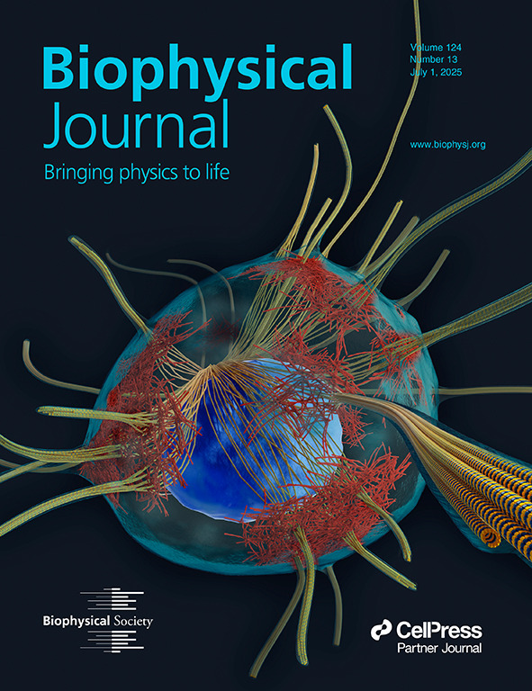
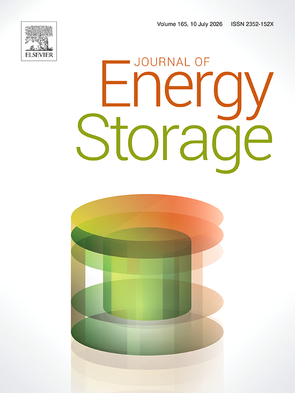
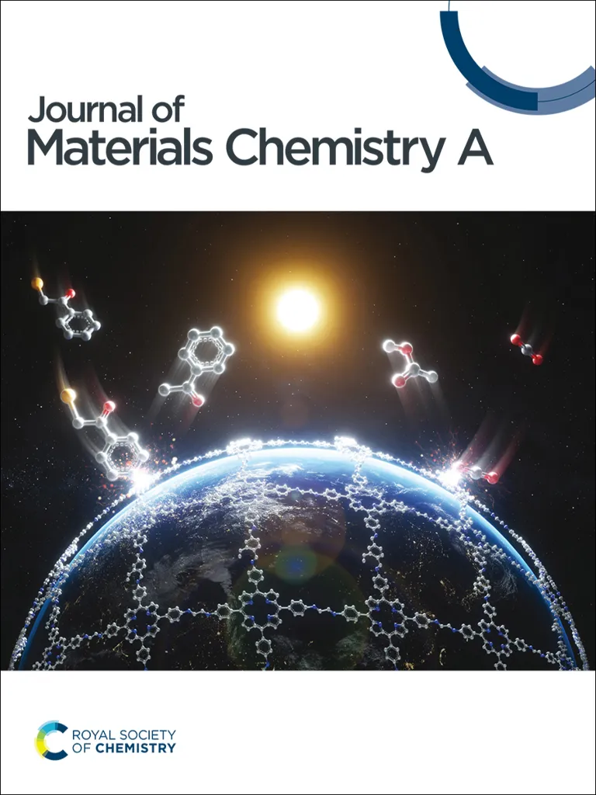
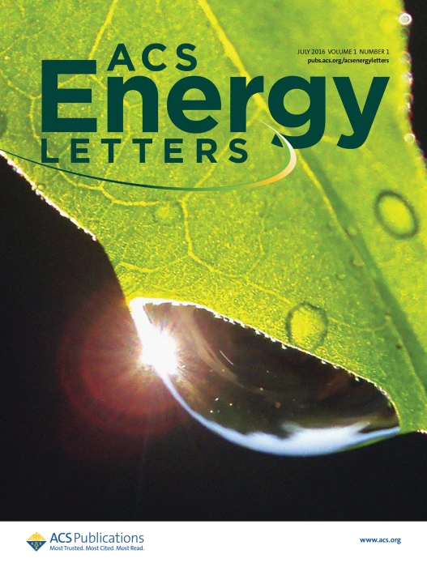
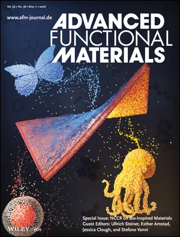
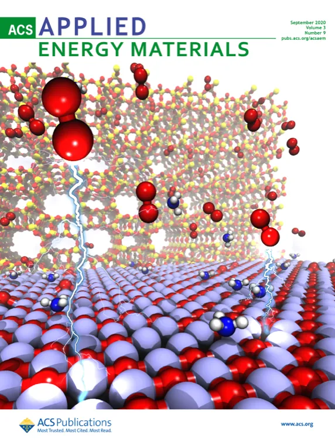

Kinetic Model of E-P Condensates Dynamics Reveals Transcriptional Speed, Noise, and Energy Trade-offs View paper
Enhancing MXene Electrochemistry through Spatial Control of O and F Termination Distributions View paper
Beyond Vehicular Transport: Fluorination-Induced Structural Diffusion in Ether Electrolytes View paper
Solvation Sheath Exchange with Weak-Solvent Molecules Enables the Development of Sodium dual-Ion pouch Cells View paper
Bifunctional Current Collectors for Lean-Lithium Metal Batteries. View paper
Tailoring Electrochemical Properties of Ether-based Solvents through Fluorination-Driven Solvation Control. View paperKinetic model of E-P condensate dynamics
S. Senapati, A. K. Sharma, H. Kumar. Models transcriptional speed, noise, and energetic trade-offs.
Weak-solvent exchange enables sodium dual-ion pouch cells
C. Sanjaykumar, S. D. Adhikari, M. Chandra, K. K. Mishra, et al., H. Kumar.
MXene alloy metal-semiconductor contact for low-resistive FETs
S. Bera, D. Koushik, H. Kumar. Interface engineering for electronic devices.
Enhancing MXene electrochemistry through O/F termination control
S. Bera, S. K. Barik, H. Kumar. Spatial control of surface terminations is used to tune MXene electrochemical behavior.
Ultra high-rate LiFePO4 cathodes for fast charging Li-ion batteries
Ch Gowthami, A. Venu Vinod, Manorama Pandey, H. Kumar, R. Vijay, S. Anandan.
Fluorination-induced structural diffusion in ether electrolytes
S. K. Barik, H. Kumar. A mechanism-focused electrolyte paper beyond vehicular transport.
Predicting gene expression changes from chromatin structure
S. Senapati, I. Irshad, A. K. Sharma, H. Kumar. Connects structural modification to expression output.
Accelerating discovery of solid-state electrolytes with machine learning
R. Sewak, V. Sudarsanan, H. Kumar. ML-assisted screening for fast ion-conducting solids.
Tunable strain soliton networks confine electrons
D. Edelberg, H. Kumar, V. Shenoy, H. Ochoa, A. N. Pasupathy. Strain networks in van der Waals materials.
- S. Senapati, A. K. Sharma, H. Kumar, (2026), “Kinetic Model of E-P Condensates Dynamics Reveals Transcriptional Speed, Noise, and Energy Trade-offs” Biophysical Journal, Just Accepted, DOI: 10.1016/j.bpj.2026.02.015
- C. Sanjaykumar, S. D. Adhikari, M. Chandra, K. K. Mishra, Sungjemmenla, R. Singh, S. K. Vineeth, H. Kumar, S. K. Chauhan, R. Singh, V. Kumar, (2026), “Solvation Sheath Exchange with Weak-Solvent Molecules Enables the Development of Sodium dual-Ion pouch Cells” ACS Energy Letters, 11, DOI: 10.1021/acsenergylett.5c03388
- S. Bera, D Koushik, H. Kumar, (2025), “MXene alloy-based metal-semiconductor contact for low-resistive field-effect transistors" Communication Engineering, 4,190
- S. Bera, S. K. Barik, H. Kumar, (2025)“Enhancing MXene Electrochemistry through Spatial Control of O and F Termination Distributions", Journal of Energy Storage, 139 (20), 118594.
- Ch Gowthami, A Venu Vinod, Manorama Pandey, H. Kumar, R Vijay, S Anandan (2025). “Ultra high-rate performance LiFePO4 cathode material for next generation fast charging Li-ion batteries" Journal of Power Sources, 660, 238537.
- S. K. Barik, H. Kumar (2025). “Beyond Vehicular Transport: Fluorination-Induced Structural Diffusion in Ether Electrolytes" , Journal of Materials Chemistry A,13, 30224-30234.
- S. K. Barik, S. D. Adhikari, H. Kumar (2025). “Tailoring Electrochemical Properties of Ether-based Solvents through Fluorination-Driven Solvation Control.” ACS Applied Energy Materials, 8, 5182–5190.
- R. Rajsekharan, R. Nadarajan, S. Das, H. Kumar, M. M. Shaijumon (2025). “Bifunctional Current Collectors for Lean-Lithium Metal Batteries.” Advanced Functional Materials, 2502473.
- S. Das, S. Sahoo, P. K. Sahoo, H. Kumar, N. Mohapatra (2025). “Room-Temperature Ferromagnetism and Nonlinear Phonon Dynamics in Atomically Thin 2H-CrS2 Nanosheets: Implications for Spintronics Applications.” ACS Applied Nano Materials, 8, 35, 17276–17286.
- Mohana Sundaram Palvannan, S.K. Vineeth, Soumyashree Das Adhikari, Sanjay Kumar, Sennu Palanichamy, Chhail Bihari Soni, Mahesh Chandra, Sungjemmenla, H. Kumar, and Vipin Kumar,(2025), “An aluminium-doped sodium manganese hexacyano ferrate cathode for high-rate safe Na-ion batteries", Chemical Communications, 61, 12980
- S. Bera, H. Kumar (2025). “Tailoring Contact Properties in Janus TMD Spin-FETs for Enhanced Spin Transport: A Bilayer Interface Approach.” ACS Applied Electronic Materials, 7, 3324–3332.
- C. B. Soni, S. K. Barik, S. K. Vineeth, B. Yadav, M. Chandra, Sungjemmenla, S. Kumar, H. Kumar, V. Kumar (2025). “Sodium Metal Anode with Multiphasic Interphase for Room Temperature Sodium-Sulfur Pouch Cells.” Journal of Materials Chemistry A, 13, 1500–1510.
- S. Senapati, I. Irshad, A. K. Sharma, H. Kumar (2025). “Predicting Gene Expression Changes from Chromatin Structure Modification.” npj Systems Biology and Applications, 11, 34.
- R. Sewak, V. Sudarsanan, H. Kumar (2025). “Accelerating Discovery of Solid-State Electrolytes: Machine Learning Approach.” Physical Chemistry Chemical Physics, 27, 12345–12353.
- Sweta Das, Niharika Mohapatra, and H. Kumar, (2025) “Resolving Atomic-Scale Stick-Slip and Sub-Moiré Frictional Modulation in Twisted Bilayers with Variable Tip Sizes", Journal of Physics: Condensed Matter,37, 275001.
- C. Sanjaykumar, Sungjemmenla, M. Chandra, C. B. Soni, S. K. Vineeth, S. Das, N. Cohen, H. Kumar, D. Mandler, V. Kumar (2024). “Tuning the local chemistry of SPAN to realize the development of room-temperature sodium–sulfur pouch cells.” Journal of Materials Chemistry A, 12, 25000–25010.
- B. Yadav, C. B. Soni, S. Bera, H. Kumar, V. Kumar (2024). “Direct observation of sodium dendrites to decipher the complicated behavior of electrolyte systems.” Electrochimica Acta, 507, 145212.
- C. B. Soni, S. Bera, M. Chandra, S. K. Vineeth, S. Kumar, H. Kumar, V. Kumar (2024). “Altering Na-ion solvation to regulate dendrite growth for a reversible and stable room-temperature sodium-sulfur battery.” Journal of Materials Chemistry A, 12, 21853–21863.
- S. Senapati, I. Irshad, A. K. Sharma, H. Kumar (2023). “Fundamental insights into the correlation between chromosome configuration and transcription.” Physical Biology, 20, 051002.
- C. B. Soni, S. Bera, S. K. Vineeth, H. Kumar, V. Kumar (2023). “Novel organic molecule enabling a highly-stable sodium metal anode for room-temperature sodium-metal batteries.” Journal of Energy Storage, 71, 108132.
- S. Bera, H. Kumar (2023). “Phase Stability of MXenes: Role of Coordination Symmetries, Transition Metals, and Surface Terminations.” Journal of Physical Chemistry C, 127, 20734–20741.
- H. Kumar, S. Bera, S. Dasgupta, A. K. Sood, C. Dasgupta, P. K. Maiti (2023). “Dipole alignment of water molecules flowing through a carbon nanotube.” Physical Review B, 107, 165402.
- P. Mishra, K. Chatterjee, H. Kumar, R. Jha (2023). “Flexible and wearable photonic-crystal fiber interferometer for physiological monitoring.” ACS Applied Optical Materials, 1, 569–577.
- P. Mishra, H. Kumar, S. Sahu, R. Jha (2023). “Human Pulse and Respiration Monitoring: Reconfigurable and Scalable Balloon-Shaped Fiber Wearables.” Advanced Materials Technologies, 8, 2300429.
- T. A. Wani, P. Garg, S. Bera, S. Bhattacharya, S. Dutta, H. Kumar, A. Bera (2022). “Narrow-Bandgap LaMO3 (M = Ni, Co) nanomaterials for interfacial solar steam generation.” Journal of Colloid and Interface Science, 612, 203–212.
- P. Mishra, H. Kumar, S. Sahu, R. Jha (2022). “Flexible and Wearable Optical System Based on U-shaped Cascaded Microfiber Interferometer.” Advanced Materials Technologies, 8, 2200661.
- V. Yadav, I. U. Irshad, H. Kumar, A. K. Sharma (2021). “Quantitative Modeling of Protein Synthesis Using Ribosome Profiling Data.” Frontiers in Molecular Biosciences, 8, 537.
- D. Edelberg, H. Kumar, V. Shenoy, H. Ochoa, A. N. Pasupathy (2020). “Tunable strain soliton networks confine electrons in Van der Waals materials.” Nature Physics, 16, 1097–1102.
- S. Jia, A. Bandyopadhyay, H. Kumar, J. Zhang, W. Wang, T. Zhai, V. B. Shenoy, J. Lou (2020). “Biomolecule Sensing by Surface-Enhanced Raman Scattering of Monolayer Janus Transition Metal Dichalcogenide.” Nanoscale, 12, 10723.
- N. C. Frey, A. Bandyopadhyay, H. Kumar, B. Anasori, Y. Gogotsi, V. B. Shenoy (2019). “Surface-Engineered MXenes: Electric Field Control of Magnetism.” ACS Nano, 13, 2831–2839.
- L. Wang, S. S. Welborn, H. Kumar, M. Li, Z. Wang, V. B. Shenoy, E. Detsi (2019). “High-Rate and Long Cycle-Life Alloy-Type Magnesium-Ion Battery Anode.” Advanced Energy Materials, 4, 1902086, Cover Article.
- Z. Wang, A. Bandyopadhyay, H. Kumar, M. Li, A. Venkatakrishnan, V. B. Shenoy, E. Detsi (2019). “Degradation of magnesium-ion battery anodes in all-phenyl complex electrolyte.” Journal of Energy Storage, 23, 195–201.
- H. Kumar, C. Dasgupta, P. K. Maiti (2018). “Phase Transition in Monolayer Water Confined in Janus Nanopore.” Langmuir, 34(40), 12199–12205.
- N. C. Frey, H. Kumar, B. Anasori, Y. Gogotsi, V. B. Shenoy (2018). “Tuning noncollinear spin structure in ferromagnetic nitride MXenes.” ACS Nano, 12, 6319–6325.
- K. Ghatak, S. Basu, T. Das, H. Kumar, D. Datta (2018). “Effect of Cobalt Content on Electrochemical Properties of NCA Type Cathode Materials.” Physical Chemistry Chemical Physics, 20, 22805–22817.
- D. Er, H. Ye, N. C. Frey, H. Kumar, J. Lou, V. B. Shenoy (2018). “Prediction of Enhanced Catalytic Activity for Hydrogen Evolution Reaction in Janus Transition Metal Dichalcogenides.” Nano Letters, 18, 3943–3949.
- N. C. Frey, B. Byles, H. Kumar, E. Pomerantseva, V. B. Shenoy (2018). “Prediction of optimal structural water concentration in transition-metal oxide electrodes.” Physical Chemistry Chemical Physics, 20, 9480–9487.
- H. Y. Asl, J. Fu, H. Kumar, S. S. Welborn, V. B. Shenoy, E. Detsi (2018). “In-situ Dealloying of Bulk Mg2Sn in Mg-Ion Half Cell for High-Performance Mg-Ion Battery Anodes.” ACS Chemistry of Materials, 30, 1815–1824, Cover Article.
- H. Kumar, N. C. Frey, L. Dong, B. Anasori, Y. Gogotsi, V. B. Shenoy (2017). “Tunable Magnetism and Transport Properties in Nitride MXenes.” ACS Nano, 11, 7648–7655, Cover Article.
- L. Dong, H. Kumar, B. Anasori, Y. Gogotsi, V. B. Shenoy (2017). “Rational Design of 2D Metallic and Semiconducting Spintronic Materials in Double-Transition-Metal MXenes.” Journal of Physical Chemistry Letters, 8, 422–428.
- H. Kumar, E. Detsi, D. Abraham, V. B. Shenoy (2017). “Fundamental Mechanisms of Solvent Decomposition in SEI Formation in Sodium-Ion Batteries.” ACS Chemistry of Materials, 28(24), 8930–8941.
- S. Chakraborty, H. Kumar, C. Dasgupta, P. K. Maiti (2017). “Confined Water: Structure, Dynamics and Thermodynamics.” Accounts of Chemical Research, 50(9), 2139–2146.
- D. Er, E. Detsi, H. Kumar, V. B. Shenoy (2016). “Defective Graphene and Graphene Allotropes as High Capacity Anode Materials for Mg-ion Batteries.” ACS Energy Letters, 1, 638–645.
- H. Kumar, L. Dong, V. B. Shenoy (2016). “Limits of Coherency and Strain Transfer in Flexible 2D van der Waals Heterostructures.” Scientific Reports, 5, 21516.
- H. Kumar, D. Er, L. Dong, J. Li, V. B. Shenoy (2015). “Elastic deformations in 2D van der Waals heterostructures and their impact on optoelectronic properties.” Scientific Reports, 5, 10872.
- H. Kumar, C. Dasgupta, P. K. Maiti (2014). “Structure, Dynamics and Thermodynamics of Single-file Water Under Confinement.” RSC Advances, 5, 1893–1901.
- H. Kumar, C. Dasgupta, P. K. Maiti (2014). “Driving Force for Water Entry in Hydrophobic Carbon Nanotube.” Molecular Simulation, 41, 504–511.
- R. Shivanna, D. Pramanik, H. Kumar, et al. (2013). “Confinement Induced Stochastic Sensing of Charged Coronene and Perylene Aggregates in alpha-Hemolysin Nanochannel.” Soft Matter, 9, 10196–10202.
- H. Kumar, Y. Lansac, M. Glaser, P. K. Maiti (2011). “Biopolymers in nanopores: challenges and opportunities.” Soft Matter, 7, 5898–5907.
- H. Kumar, B. Mukherjee, C. Dasgupta, A. K. Sood, S. T. Lin, P. K. Maiti (2011). “Thermodynamics of water entry in hydrophobic channels of carbon nanotubes.” Journal of Chemical Physics, 134, 124105.
Peer-Reviewed Book Chapters
- Kumar, H., et al. “Graphene and Carbon Nanotube-based Nanomaterial.” Handbook of Carbon Nanomaterials, Vol. 6, edited by F. D’Souza and K. M. Kadish, World Scientific.
- Kumar, H., Maiti, P. “Introduction to Molecular Dynamics Simulations.” Computational Statistical Physics, edited by S. B. Santra and P. Ray, Hindustan Book Agency.
- Nathan C Frey, Christopher C Price, Arkamita Bandyopadhyay, Hemant Kumar, Vivek B Shenoy, Predicted Magnetic Properties of MXenes in the book 2D Metal Carbides and Nitrides (MXenes), edited by Anasori B., and Gogotsi Y. Springer Nature, Switzerland
- Chakraborty, S., Kumar, H. “Molecular Modeling of 2D Materials.” Synthesis, Modelling, and Characterization of 2D Materials, edited by E. H. Yang, Elsevier.